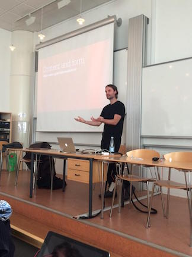

Sebastian Barfort
Ph.D, Postdoc
Økonomisk Institut, Københavns Universitet.
@sbarfort /sebastianbarfort.github.io
Forsker i politisk økonomi og public finance
Primært register- og survey data (+ text data, netværk, etc.)
Studeret statistik, programmering og digitale metoder på Columbia, NYU, University of South Carolina, DTU, etc.
Underviser i Social Data Science med David Dreyer Lassen
Vejleder BA/MA opgaver i digitale metoder
Social Data Science
Nyt fag på Økonomisk Institut (første gang E15)
Introduktion til "moderne" digitale metoder
Åbent for BA, MA og Ph.D og alle studier på CSS
Stor efterspørgsel: +100 studerende
Introducerende: fokus på metoder for small data (< 500 GB)
Undervisning i R , shell, git og Github
Eksamen: opgave + mundtligt forsvar
Rune Madsen

Director of Software Development, O’Reilly Media
Adjunct Professor, ITP, New York University
Tidligere Developer på New York Times
Gæsteforelæsning om datavisualisering på NYT
Eksempel fra E15 eksamensopgave I
What makes news on social media?
Scrape alle artikler fra 2015 fra DR og Politiken (ca 80.000)
Hvilke af disse ender på Facebook?
Resultat: klar bias. Udenlandske nyheder markant underrepræsenteret.
Eksempel fra E15 eksamensopgave II
Hvad er værdien af metroen for ejendomspriser i KBH?
Scrape data for alle boligsalg tilbage til 1991
Beregn afstand til nærmeste metrostation
Benyt statistiske modeller til at isolere "metroeffekten"
tl;dr: Du vil gerne bo tæt på en metro (men ikke for tæt)
Opsummering
Stor studenterinteresse for digitale metoder
Stor interesse fra den private sektor
Åbenlyst tværfaglig område
Studerende har begrænset programmeringserfaring
Vi vil gerne endnu længere med de prædiktive metoder ("Social Data Science: Advanced Topics")
Interesseret?
Læs mere om Social Data Science her
Kører som sommerskole i august 2016 (tilmelding her)
Mangler SDS noget essentielt? Contribute på github
- Tak for Jeres tid!